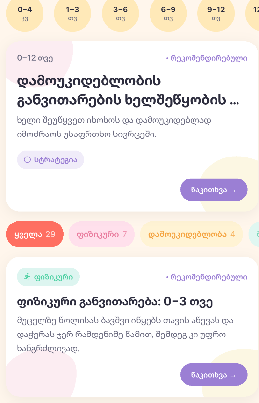
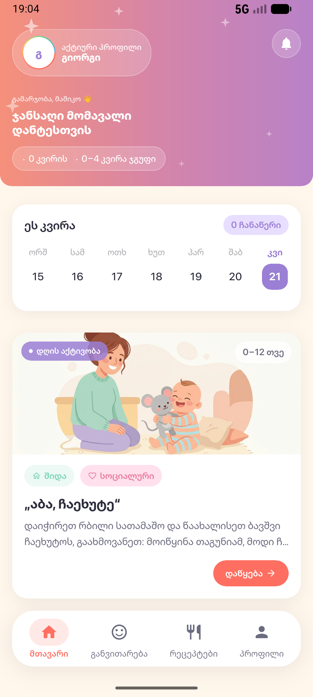
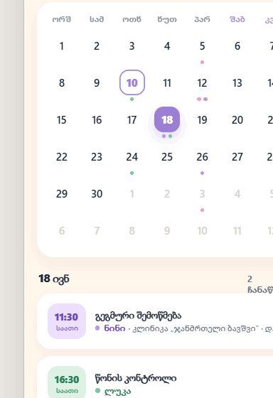

განვითარება და სტატიები
ასაკის მიხედვით შერჩეული სტატიები ფიზიკური, მეტყველებისა და სოციალური უნარების შესახებ — UNICEF-ის (გაეროს ბავშვთა ფონდი) მასალებზე დაყრდნობით. შეინახეთ საყვარელი სტატიები.
UNICEF-ის რჩევები
განვითარება, რეცეპტები და აქტივობები, ძილის ტრეკერი, დამამშვიდებელი ხმები, ზრდის გრაფიკი, ვაქცინაცია და ჯანმრთელობის კალენდარი — ყველაფერი ერთ ქართულ აპლიკაციაში, სიმშვიდით და სითბოთი.

განვითარებიდან კვებამდე, ძილის ტრეკერიდან ვაქცინაციამდე — Sanyta-ს ყველა ინსტრუმენტი თქვენთვის მუშაობს.
ასაკის მიხედვით შერჩეული სტატიები ფიზიკური, მეტყველებისა და სოციალური უნარების შესახებ — UNICEF-ის (გაეროს ბავშვთა ფონდი) მასალებზე დაყრდნობით. შეინახეთ საყვარელი სტატიები.
UNICEF-ის რჩევები
დაბალანსებული, ასაკის შესაბამისი რეცეპტები 6 თვიდან 3 წლამდე — NHS-ის (ბრიტანეთის ჯანდაცვის ეროვნული სამსახური) რეკომენდაციებით, პირველი საკვებიდან საოჯახო კერძებამდე.
NHS-ის რეცეპტებიგანმავითარებელი თამაშები და მცირე აქტივობები, რომლებიც ასტიმულირებს გრძნობებსა და ცნობისმოყვარეობას — ყოველ დღეს ახალი აქტივობა.
ყოველდღე ახალიჩართეთ ტაიმერი ერთი შეხებით და ჩაინიშნეთ კვება, ძილი, ტირილი და საფენის ცვლა. ნახეთ დღის შეჯამება და ისტორიის გრაფიკი.
კვება · ძილი · საფენიდამამშვიდებელი იავნანები და თეთრი ხმაური — წვიმა, ზღვის ტალღები, ბუხრის ტკაცუნი და საშვილოსნოს ხმა. დაეხმარეთ პატარას დამშვიდებაში.
იავნანა · თეთრი ხმაურიპირველი ღიმილი, პირველი კბილი, პირველი ნაბიჯები — შეინახეთ ბავშვის განუმეორებელი მომენტები ფოტოთი, თარიღითა და შენიშვნით.
ფოტო-მოგონებებიჩაწერეთ სიმაღლე და წონა — Sanyta ავტომატურად დახატავს ზრდის მრუდს WHO-ს (მსოფლიო ჯანდაცვის ორგანიზაცია) პერცენტილებთან შედარებით.
WHO-ს პერცენტილებიNCDC-ის (დაავადებათა კონტროლის ეროვნული ცენტრი) ოფიციალურ კალენდარზე დაფუძნებული აცრების გრაფიკი, პროგრესის თვალყური და შეხსენებები — რომ არცერთი აცრა არ გამოგრჩეთ.
NCDC-ის გრაფიკიბავშვთა პირველადი დახმარების პრაქტიკული ტრენინგი ოჯახებისთვის — სუნთქვა, გადაცდენა და გადაუდებელი მდგომარეობები, ლიცენზირებული ინსტრუქტორებით.
ტრენინგი ოჯახებისთვის
ექიმთან ვიზიტები, შეხვედრები და შეხსენებები ერთ ადგილას. ჩაინიშნეთ მნიშვნელოვანი თარიღები და მიიღეთ დროული შეტყობინებები.
ჭკვიანი შეხსენებებიდაამატეთ ბავშვის სახელი და დაბადების თარიღი — Sanyta დანარჩენს თავად მოარგებს ასაკს.
ყოველდღე ნახეთ ასაკის შესაბამისი ეტაპები, რეცეპტები და აქტივობები — სპეციალურად თქვენი ბავშვისთვის.
მონიშნეთ მიღწევები, ჩაინიშნეთ ვიზიტები და დააკვირდით განვითარების სრულ სურათს.
Sanyta შექმნილია კონფიდენციალურობის პრინციპით. ჩვენ არ ვყიდით თქვენს მონაცემებს და არ ვაჩვენებთ რეკლამას. თქვენი ოჯახის ინფორმაცია მხოლოდ თქვენ გეკუთვნით.
წაიკითხეთ კონფიდენციალურობის პოლიტიკაჩამოტვირთეთ Sanyta და მიეცით თქვენს ბავშვს საუკეთესო დასაწყისი.